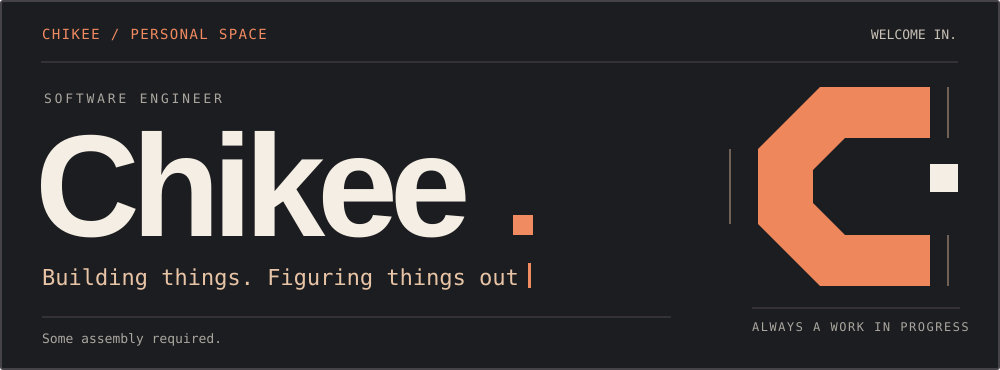
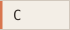
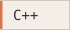
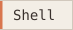
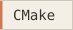
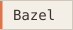
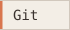
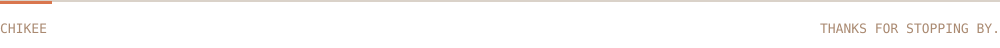

I'm Chikee. I work with systems software and enjoy understanding how the pieces fit together.
EngineeringC/C++ · embedded systems Software architecture, cross-platform builds, deployment, and runtime performance. |
ExploringLinux · developer tools Tinkering with workstation setups, desktop workflows, and tools for everyday development. |
Some of that tinkering lives in utopia →, my project for reproducible Linux workstation setups.
Languages



Platforms & build tools



